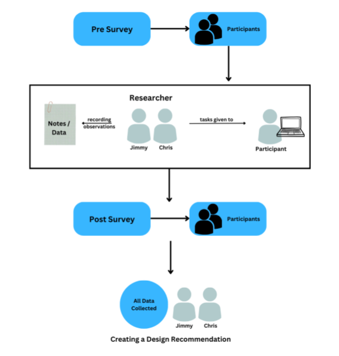
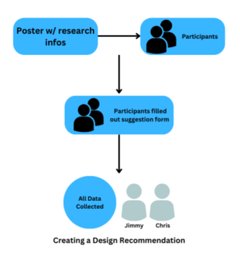
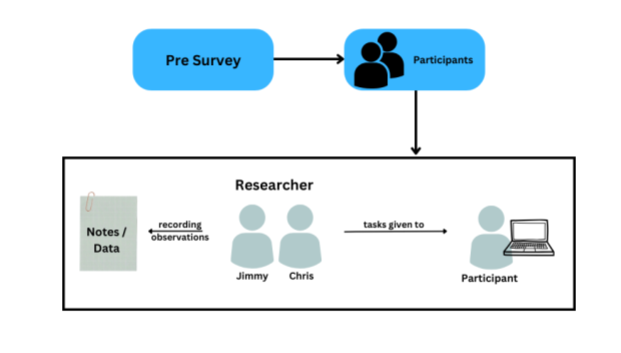

Deliverable #2
Main Page
Design Concepts
Due to the slightly different nature of our project where we are assessing what
the possible problem may be, our design concepts look a little bit different. We felt that a sketch/diagram
doesn't represent our type of problem as well, so we leaned into text description for a most of ours,
and created 3 diagrams representing our most diverse Design Concepts.
For our concepts we assess different possible ways we can structure our surveys and usability tests.
- Possibility 1: We could use no surveys and only observe the participants as they attempt
to navigate the MBA Graduate website. In this scenario we would have very little information about the
participants, but we could trust our results slightly better as we minimize how much we lead
our participant in how they perform the tests.
- Possibility 2: We could have them perform the tests themsevles while we have an extensive evaulation
about how they felt and their experience afterwards. Not being able to see them would give us less data,
but it would be less time intensive and with the pre and post surveys we could still gain enough to
make an educated decision.
- Possibility 3: We could evaluate the sites ourselves using our knowledge from this class. This would allow
us to directly apply what we learn in class, but we'd lose the advantage of having specific participants
who we have background knowledge of to allow us to make a more educated conclusion.
- Possibility 4: We could administer pre and post surveys, and directly administer the usability
tests. This give us the advantage of having a large data set for each participant, which could allow
us to minimize amount of time looking for participants instead of analyzing the data to arrive at a
conclusion.
Diagram:

- Possibility 5: We could setup posters asking people to anonymously attempt a specific task and write
down their thoughts an experience in a google form at the end. This would ideally result in lots of data
from a diverse group of people, but isn't guaranteed to result in high quality data or a signifigant
amount. While this idea has its merits, it's not ideal for a more in depth analysis.
Diagram:

- Possibility 6: We could design a singular google form that a participant goes through and completes
specific task and makes remarks about each one in the form. This kind of administration would allow less
observation based data but a more structured data guaranteed to be relevant to the specific task, as participants
would have filled out each section immediately after they perform the specific task.
- Possibility 7: We could take a slightly different approach here. In this we would ask a participant to spend a day as if they were a prospective grad student and
attempt to gather as much information as they could. Because we're attempting to measure which information forms
people can access, objective data can include which forms were easier or harder to arrive at, which
form they felt were sufficient for what they were looking for, and how satisfied they were overall.
- Possibility 8: In this concept we would create a sitemap of the MBA program website and analyze which forms have more links that
lead to them, which forms are accessible through easier means, and how often each page gets visited. The main downside of this
is the lack of direct participant input, and the amount of information to gather would be far less feasable
than another idea.
- Possibility 9: This concept revolves around gathering specific participants that would exactly reflect the typical prospective grad student. In this we
would find a number of prospective or accepted grad students, and simply survey them about their experience in attempting to apply.
The advantage of this is getting participants who are guaranteed to be invested in the results, and who's experiences are more
real than simulated, in the case of simply asking someone to act as if they were a prospective student.
- Possibility 10: In this concept we would find a group of participants, and we would measure their frustration levels
with attempting to access a specific page. In this test, we would find out about specifc pages and how accessible
they are, but at the expense of a more holistic idea of the system as a whole. This would give us valuable information,
and it is information we would likely need to come to a conclusion, but it may be better to reduce the scope of the tests
in order to gather more inclusive data.
- Possibility 11: In this one we would administer a pre-survey to asses the participants, and directly
use observations from our usability test, using only data from the assessment. This allows us less data to analyze,
allowing us to focus specifically on the direct observations we took.
Diagram:

Prototypes
Usability Goals and Benchmark Tests
Our usability test is the crux of our project - we are evaluating how usabile the website is, after all. We decided, as of now, on directly observing our participants.
We would focus on a few main things throughout this test
- Specific tasks users will be performing, and how well they achieve it (locating specific forms, pages, etc)
- The thought process of users as they go through the tasks (both through the post survey, and verbally as they perform it)
- Researcher Observations
These specific areas of focus, we believe, are broad enough that they would give us enough data to create an educated report on the site.
Ideally, we would have about 10-15 participants, of several diverse backgrounds relating to the Graduate school.
Some details we would be measuring include timestamps of checkpoints, current experience with the Graduate school,
current interest in the MBA program, and overall satisfaction of the experience. (Did they feel they found the correct forms? Do they feel as if they
have enough information to apply and feel confident in their process?) As of now, this is just a draft of our
current best ideas and practices, and it is subject to change. Ideally, and criticism allows us to improve
directly on either fundamental flaws in our approach or details that may be important. However, as of now,
we are satisfied with this as our current draft.
Benchmark tests for our project would be measurable, objective things we can measure during our assessment. These things could be very concrete, such as time taken to reach a certain
form, or less concrete, such as the participant rating on a scale their frustration at certain aspects of the site. The important part of these is that they're
directly comparable to each other and have an objective meaning that we can draw concrete conclusions from.
For now, we will be looking at these:
- Exact time it takes to navigate to a certain form
- Satisfaction as rated on an objective scale
- Frustration (at specific points) as rated on an objective scale
- How many pages users navigate through to achieve a specific goal